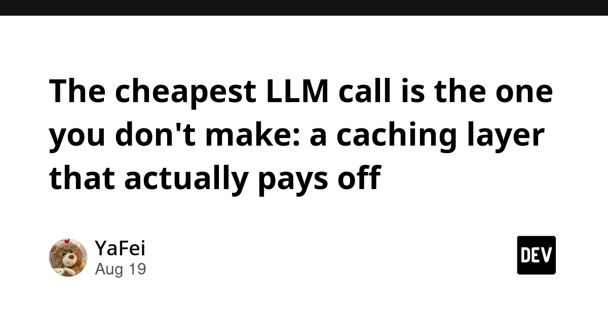
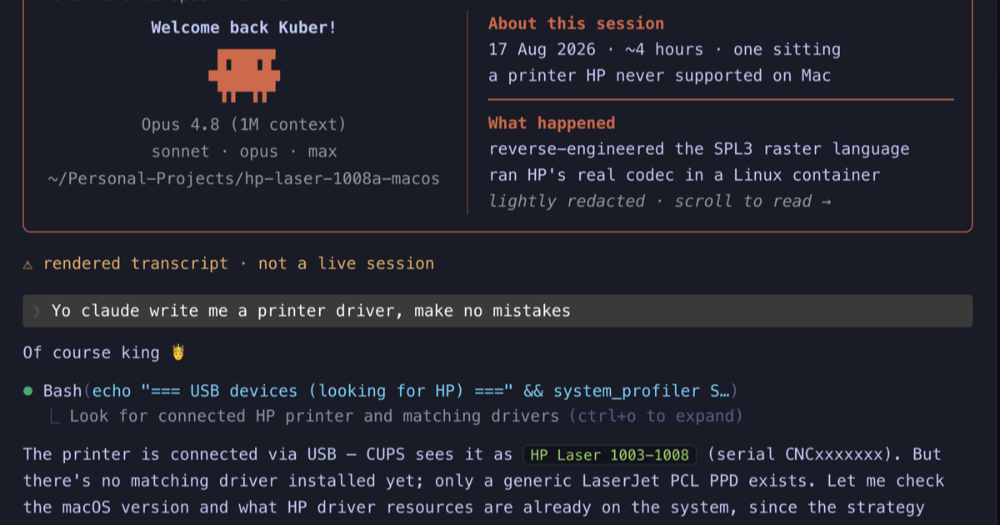
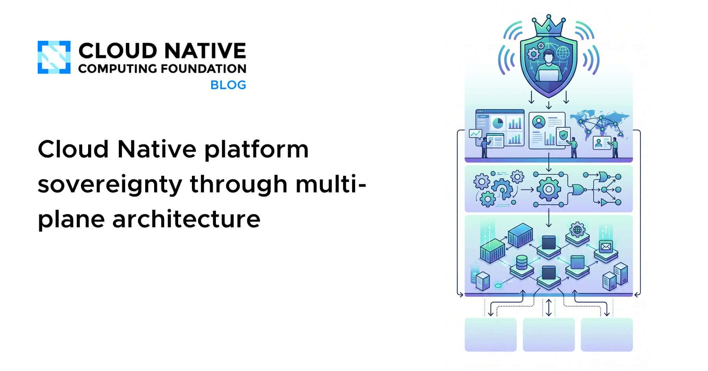
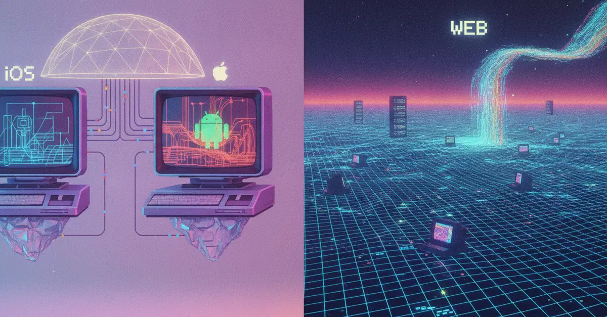
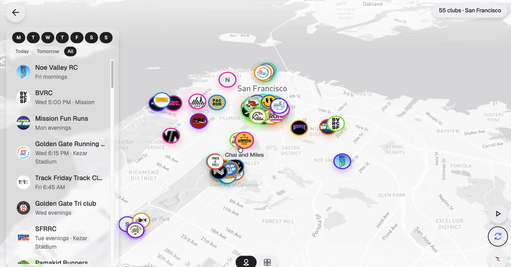
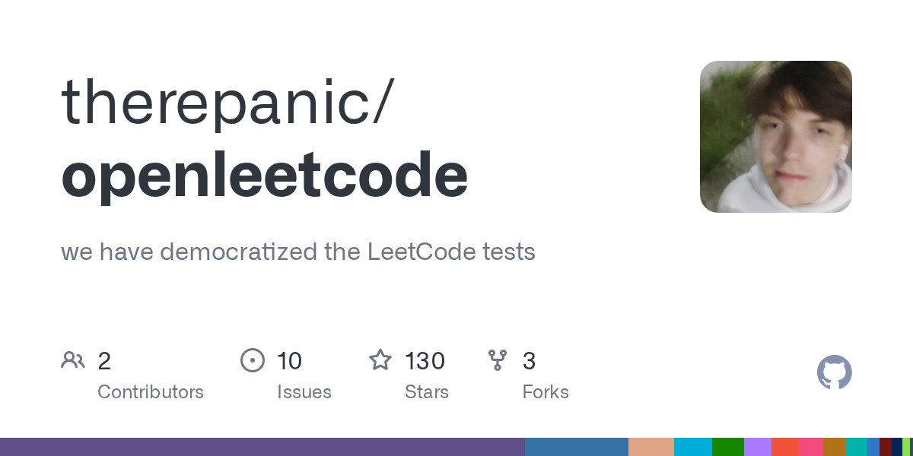
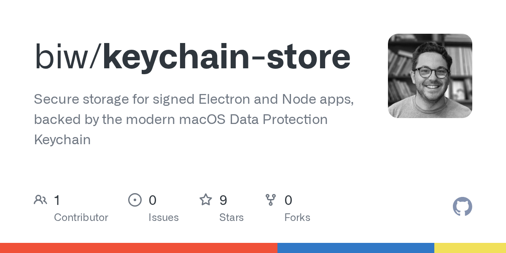

🔥 Top 3 (must read)
Claude Code May–August 2026 weekly limits promotion
(HN discussion, 262 points) — Anthropic is running a promotion that changes the weekly usage limits for Claude Code through August. The HN thread has a lot of real-world detail on how people hit the limits and plan around them. You use Claude Code daily, so this directly changes how much you can run agents this month.

Mojo🔥 is now open source
Modular shipped Mojo 1.0 last week and has now released the compiler and toolchain as open source, keeping a promise made in May 2023. This is the biggest language news of the day. It matters even outside your stack: an open compiler means the ecosystem (tooling, CI, packages) can now grow the way other languages did.
S
The AI Agent Stack in 2026: Frameworks, Memory, Orchestration
A practical breakdown of what an agent system is made of: the framework layer matters less than the memory and orchestration layers around it. Useful for you as an EM: it gives a simple map for team discussions about "which agent framework do we bet on" — and argues that question is the wrong one.
🤖 AI for developers
The cheapest LLM call is the one you don't make
a team's write-up on adding a caching layer for LLM calls after provider routing already cut their bill ~40%. Caching turned out to be the bigger, less flashy cost lever.

Claude Code teaching macOS to natively print to the HP Laser 1008a
(HN) — someone used Claude Code to write a working macOS printer driver for an unsupported printer. A good concrete example of agents doing low-level work that used to need a specialist.

Degraded performance for multiple Claude models
(HN) — Anthropic had a quality incident across several models. Worth knowing if your team saw odd agent output around this window.

👔 Engineering & teams
Cloud native platform sovereignty through multi-plane architecture
CNCF piece arguing that sovereignty is not just "pick a region": it is about how control planes and data planes are split across environments. Good system-design reading for your infra interest.

Accessible by platform: how iOS and Android differ from the web
WCAG was written for web pages; native apps rewrite the mechanics. If your accessibility checklist assumes one rulebook covers web and mobile, you are shipping hidden compliance debt.

🎯 For me
The Claude Code limits promotion is the most direct hit today — check it before planning heavy agent runs this month.
The accessibility by platform article maps well to your web + Flutter split: one team, two different accessibility rulebooks.
The AI Agent Stack piece is a good share-out for your team's AI adoption discussions.
💡 App ideas & indie builds
Luten — iOS soundscape app built after a layoff
you type how you feel in plain words, it picks a soundscape, and it learns from what you finish vs skip. Text classification runs on-device with Apple's NaturalLanguage framework, so nothing leaves the phone. Nice pattern: privacy as the core feature, and learning from behavior instead of asking for ratings.

Interactive map of run clubs
two friends could not find run clubs near them, so they built a map. Classic idea shape: a real local-discovery gap, solved with a simple map UI. The same shape works for many hobby communities.

7-8 months building for an audience with no money: 10k visitors, 900 signups, 0 paying
a hard lesson worth collecting: traffic and signups mean nothing if the audience cannot pay. Validate willingness to pay before building for months.
Openleetcode — local LeetCode runner where tests live in the repo
(HN) — solves the annoyance of practicing coding problems in a browser: run everything locally, in your own editor, with tests versioned in git. Good example of "take a web-only workflow offline."

keychain-store — macOS data protection keychain for Electron apps
(HN) — fixes a real gap: Electron apps storing secrets less safely than native Mac apps. Small, sharp developer tool aimed at one concrete pain.

🎓 Try this
Try the LLM caching approach from the caching layer that actually pays off: before adding routing or switching providers to cut AI costs, measure how many of your LLM calls are repeats and put a cache in front of them. It is the cheaper lever and you can test it in an afternoon.